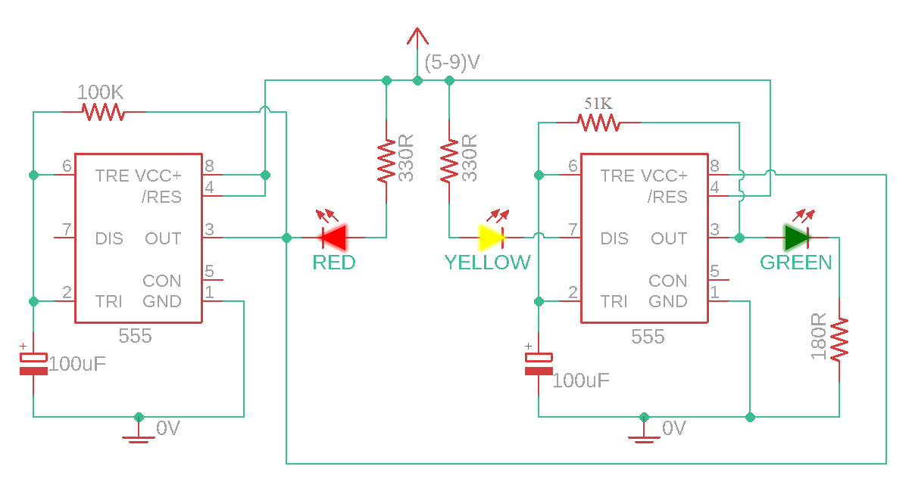

Components Required
- Breadboard
- Jumpers
- 2 x 555 Timer ICs
- LEDs: 1 Green, 1 Yellow, 1 Red
- Resistors: 100kΩ, 51kΩ, 2 x 330Ω, 180Ω
- Capacitors: 2 x 100uF
Circuit Diagram
555 Timer ICU
This ICU can be used as a timer, ocillator or flip-flop. It operated from 4.5 to 16 Volts and can directly drive LEDs and relays.
In this project it is used as a timer to coordinate the durration of LED on and off phases.
How it Works
After we supply this circuit with power the green LED will turn on, because the voltage at pin 6 is less than the supply voltage. The red LED can not power on yet but the second ICU is powered so the green LED turns on.
The capacitor slowly charges and as soon as it charges to 2/3 of the supply voltage, the supply voltage of the second IC turns off and the yellow LED turns on (the ICU is discharging). It keeps glowing until the supply of the capacitor reaches 2/3 of the supply voltage
Simultaneously, the capacitor of the first IC reacges grater than 2/3 of the supply voltage, so the output of the first ICU turns off. This results in the yellow LED turning off and the red LED turning on.
The red LED is connected only when the output of the first ICU is 0V because it is connected to the positive voltage. The Yellow LED turns on during the charging mode of the second ICU. The green LED turns on when the output of the second IC is a positive voltageAfter we supply this circuit with power the green LED will turn on, because the voltage at pin 6 is < the supply voltage. The red LED can not power on yet but second ICU is powered so he green LED turns on.
Assembly
- Use two jumpers to connect positive power rails with the other side and the negative power rails to each other, so that both sides of the breadbord will be supplied woth voltage upon inserting.
- Place the first 555 IC on the DIP support with the notch facing the left side.
- Connect pin 8 to positive rail and pin 1 to negative rail. Below is a sketch illustrating the the pin numbers.

- Connect pins 2 & 6 together.
- Connect pins 4 & 8 together.
- Place 100kΩ Resistor between pins 6 & 3.
- Place one capacitor between pin 2 and negative rail (positive side to pin 2 and negative to negative rail.
- Place the second 555 IC futher way from the fist one on the DIP support with the notch facing the left side.
- Connect pin 3 of the first IC to pin 8 of the second (now the second ICs' power supply comes from the fist IC)
- Connect pin 1 to negative rail.
- Connect pins 2 & 6 together.
- Connect pins 4 to positive rail.
- Place 330kΩ Resistor between pins 6 & 3.
- Place the other capacitor between pin 2 and negative rail (positive side to pin 2 and negative to negative rail.
- Insert the red and the yellow LEDs, so that the anode sides are on the same terminal strips but the cathode sides are in two different strips.
- Connect their anod sides to the positive rail
- Connect pin 3 of the first IC to the cathode side of the red LED using a 330Ω resistor
- Connect the cathode side of the yellow LED to pin 7 of the second IC using a 330Ω resistor
- Place a green LED on the bread board, connect its anode side to pin 3 of the second IC and its cathode side to negative rail using a 180Ω resistor
Note that you can change the time by chaning the value of the resistance and/or the capasitors.
The Project in Action
Errors occured
Fist problem occured was that the circuit would not even turn on and that was do to me putting the ICs with the notches in the opposite direction which I was supposed to.
After fixing this second problem was that the red LED would not turn on. At first I tried to use another LED assuming this one may be defect. But after tring the thered one I noticed that one of the jumbers was not connected all the way in and that was the problem.